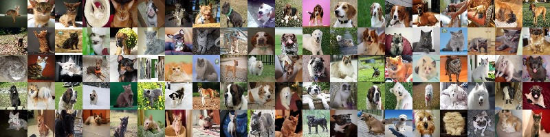
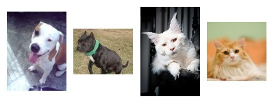
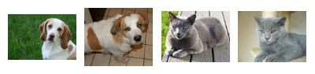
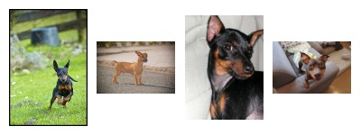
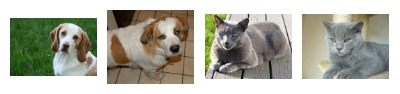
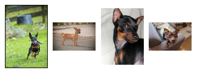

Cats and Dogs
Chongwen Guo, Zhuoran YuSpring 2019 CS 4803 / 7643 Deep Learning: Class Project
Georgia Tech

Figure 1. The Oxford-IIIT Pet Dataset
Figure 1. The Oxford-IIIT Pet Dataset
Introduction / Background / Motivation
Classification Problems and Dataset
In this project, three classifiers via images are trained and evaluated, which include binary classification: cat vs dogs, breed classification for cats, breed classification for dogs. The project consists of three major stages: build models from scratch, fine-tune pre-trained models and data augmentation with GAN. The Oxford-IIIT Pet Dataset contains 37 categories of pets with roughly 200 images for each class. The images have a large variations in scale, pose and lighting. Due to high inter class variability, low intra class variability and high pose variability, it is not easy to train and obtain a high accarucy breed-classifier, especially when the data volume is limited. We would like to use GAN to generate several fake cats and dog images. With generated images, we would like to see if they can improve accuracy of classifiers if used as data augmentation and if the classifier can correctly classify them.
Figure 2: Dataset Statistics

Figure 3: Example of high intra class variability with two American Pit Bull Terriers and two Maine coons

Figure 4: Example of low inter class variability with Beagle, Saint Bernard and British Shorthair, Russian Blue

Figure 5: Example of high pose variability with four members of Miniature Pinschers
Figure 3: Example of high intra class variability with two American Pit Bull Terriers and two Maine coons

Figure 4: Example of low inter class variability with Beagle, Saint Bernard and British Shorthair, Russian Blue

Figure 5: Example of high pose variability with four members of Miniature Pinschers
Related Works
Fine-grained recognition work has been demonstrated on cats and dogs by O. M. Parkhi, A. Vedaldi, A. Zisserman and C. V. Jawahar, which trained 63.48% and 55.68% accuracy breed classification for cats and dogs respectively, which improved to 66.07% and 59.18% when the ground truth segmentations are used.Approach
What did you do exactly? How did you solve the problem? Why did you think it would be successful? Is anything new in your approach?
Excepteur sint occaecat cupidatat non proident, sunt in culpa qui officia deserunt mollit anim id est laborum.What problems did you anticipate? What problems did you encounter? Did the very first thing you tried work?
Sed ut perspiciatis unde omnis iste natus error sit voluptatem accusantium doloremque laudantium, totam rem aperiam, eaque ipsa quae ab illo inventore veritatis et quasi architecto beatae vitae dicta sunt explicabo.Experimental Plan
How did you measure success? What datasets did you use and what experiments did you carry out? What were the results, both quantitative and qualitative? Did you succeed? Did you fail? Why?
Nemo enim ipsam voluptatem quia voluptas sit aspernatur aut odit aut fugit, sed quia consequuntur magni dolores eos qui ratione voluptatem sequi nesciunt.Current Status
| Name | Description of Work |
|---|---|
| Chongwen Guo | Data preprocessing and model utils functions (accomplished), train models using Fine-Tune Pretrained ResNet-50 convolutional neural network
(accomplished, achived 90%, 55%, 80% accuracy for cat-dog clasifier, cat-breed clasifier and dog-breed clasifier respectively) |
| Zhuoran Yu | build models from scratch (accomplished, achived 60% accarucy for cat-breed classifier), data augmentation with GAN (to do) |